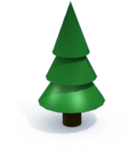
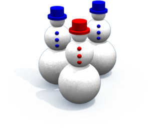
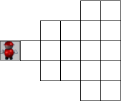
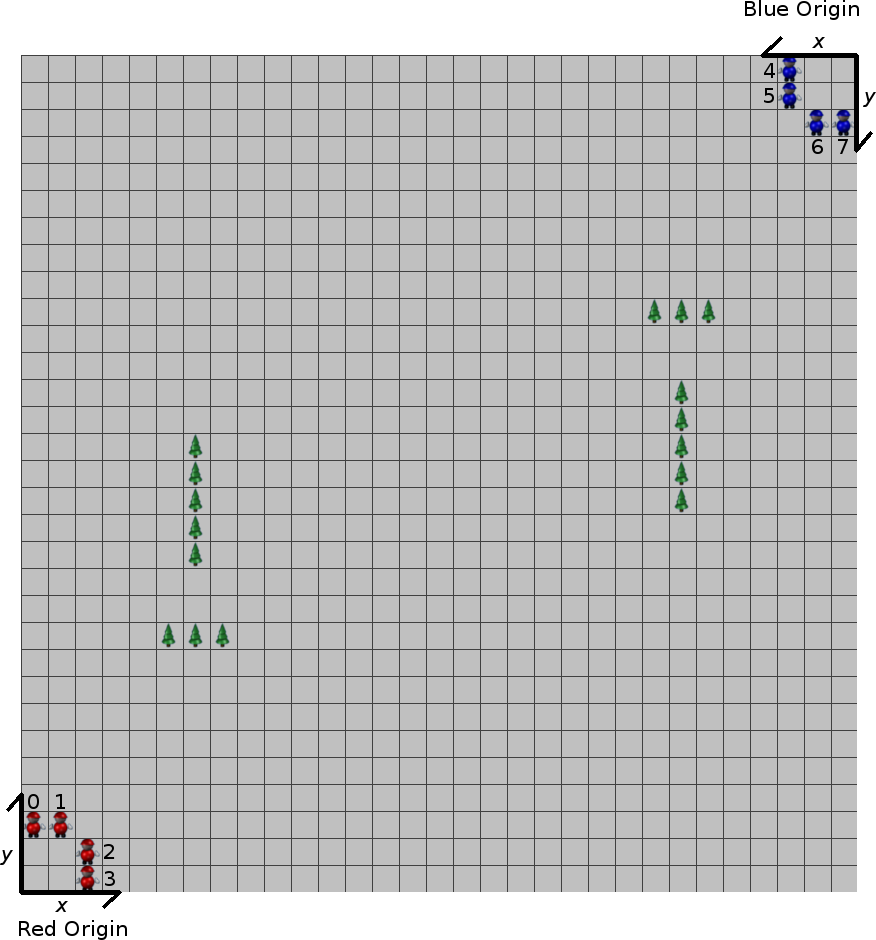
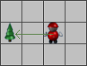
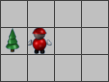
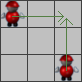
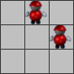

Icy Projectile Challenge is played on a field of 31 × 31 spaces. Spaces are indexed by X and Y, with X going left to right from 0 to 30 and Y going bottom to top from 0 to 30.
A few spaces contain trees. If a space contains a tree, it can't contain any snow, and a tree blocks the movement of children and blocks thrown snowballs. The tree configuration will vary from game to game, but trees will always constitute less than 10 percent of the field spaces, trees will never make non-tree-covered regions of the field unreachable, and a tree will never occupy a child's initial position. To keep things fair, the arrangement of trees will always be symmetric under a 180 degree field rotation. If there is a tree at space ( x, y ), then there will also be a tree at space ( 30 - x, 30 - y ).
Spaces without trees start out containing loose, powdered snow 3 units high (say, 3 decimeters). As the game is played, snow can be picked up by children, moved around, compressed into snowballs of three different sizes and dropped onto the ground.
Each space may contain some amount of snow in the form of powdered snow and, possibly, some snowballs on top. Both powdered snow and snowballs contribute to the height of the snow in a space. A small snowball represents one unit of height, a medium snowball represents two units of height and a large snowball represents three units of height. If, for example, a medium snowball is dropped onto a space already containing powdered snow three units high, the space will now have a height of five. Snowballs are always considered to be on top of any powdered snow in the space, even if the powdered snow was added later.
Each space may contain snow with total height between 0 and 9 units (inclusive). A player is not permitted to drop powdered snow or snowballs onto a space if the additional snow would exceed the 9 unit height limit. A player can't move into or though a space containing snow with a total height of 6 units or more. For example, a child can move through a space containing three units of powdered snow and a medium snowball, but not through a space with three units of powdered snow and a large snowball.
Snowballs dropped onto the same space can be stacked, one on top of another. If a smaller snowball is dropped onto a space already containing a larger one, the smaller one stacks on top of the larger one. If three snowballs are stacked, they form a snowman owned by the team that dropped the topmost snowball.
If a snowball is dropped onto a snowball of the same size or smaller, it smashes all snowballs of equal or smaller size back into powdered snow in the same space. Likewise, if a child walks through a space containing one or more snowballs, the snowballs are all smashed back into powdered snow. If a snowman is hit in the head with a thrown snowball, its topmost snowball is smashed back into powdered snow in the same space, turning it into a large snowball with a medium one on top.
In addition to some amount of powdered snow, the snowball stacking rules permit a space to contain any of eight different arrangements of snowballs. The following table describes the ten possible contents for a space, in addition to some amount of powdered snow. The right-hand column gives the symbol used to encode each when the game state is communicated to the player. (A space may also contain a child, but child locations are not encoded as part of the map in game/player communication.)
| Space Contents | Encoding Symbol | |
|---|---|---|
| Empty | a | |
| Tree | b | |
| Small snowball | c | |
| Medium snowball | d | |
| Small snowball on medium snowball | e | |
| Large snowball | f | |
| Medium snowball on large snowball | g | |
| Small snowball on large snowball | h | |
| Red snowman | i | |
| Blue snowman | j |
The game proceeds through a series of 180 turns. Each player controls a team of 4 children. At the start of a turn, the player reads a description of state of the field from standard input and then prints a desired action for each child to standard output. One child may directed to pick up snow, while another is making a snowball and a third is moving to a nearby space.
Each child may assume either a standing or crouching stance. A child must crouch in order to pick up snow, and it's possible for a snowball to pass over the head of a crouching child. While standing, a child can move faster and can generally throw snowballs further. The height of a child is not affected by the amount of snow in their current space. A child is always six height units tall when crouching and nine height units tall while standing.
Children can also hold snow or snowballs while they move around. The following table describes the nine different things a child can be holding, along with the symbol used to encode each in game/player communication.
| Child Holding | Encoding Symbol | |
|---|---|---|
| Empty Handed | a | |
| One unit of powdered snow | b | |
| Two units of powdered snow | c | |
| Three units of powdered snow | d | |
| One small snowball | e | |
| Two small snowballs | f | |
| Three small snowballs | g | |
| One medium snowball | h | |
| One large snowball | i |
Players can earn points and strategic advantage by building snowmen on the field. We define the domain of player A as the set of board spaces with Euclidean distance less than 8 from a snowman owned by A and closer to a snowman of A than to any snowman owned by the opponent.
At the start of each turn, a player receives a description of the field for any space visible to the player. A player cannot automatically see the entire field. Player A can see any space that's a Euclidean distance of less than 8 from one of the player's children. A player can also see any space that's in the player's domain.
Player A earns 10 points when a snowball thrown by a child on the A team hits a child on the opposing team. Player A also earns 1 point for each space that's in the domain of A. As the size of a player's domain increases and decreases, the domain portion of the score will increase and decrease accordingly.
When a child is hit by a snowball (thrown by either team), the child is dazed for the next 4 turns. Dazed children can only perform the idle action, and they appear with a little question mark next to them in the game visualization. If a child is hit with another snowball while dazed, the child will continue to be dazed for four turns starting from the second hit. For example, if a child is hit in turn 5, and then hit again in turn 6, the child will be dazed for turns 6, 7, 8, 9 and 10. Provided there are no more hits, the child will be free to take an action in turn 11. Dazed children still contribute to field visibility; they just can't take any actions.
Getting hit by a snowball may also knock the child back by one space, provided the destination space is available. This happens in the turn immediately after the snowball impact. The direction the child is knocked back depends on the angle the snowball is traveling. For example, if child A is hit by a snowball thrown by child B, the direction of knockback is determined by the relative locations of A and B. If B is to the right of A, then A will be knocked back straight to the left as long as the difference in X coordinates of A and B is at least twice the difference in Y coordinates. Similar policies are implemented for knockback in the +X, +Y and -Y directions. If none of these conditions hold, then the child will be knocked back diagonally by one space. If multiple snowballs hit a child in one turn, then the vector sum of all the trajectories of all the snowballs determines the knockback direction.
At the of the game, the winner is the player with the highest score. If there is a tie in the score, then the player scoring the most points through snowball hits will be the winner. If there is still a tie, the domain size is summed across all turns to break the tie.
Each turn, every child may perform one of ten different actions. All actions require a single turn, although some take effect earlier in the turn than others (see Action Ordering). The player directs children by printing out every child's action, one action per line.
The following figure illustrates the initial placement of children on the field. Children always start out in the positions indicated, and numbers 0 to 3 on the children indicate the ordering of actions for the team. The first action printed out directs child zero, the next action directs child one and so on. Children numbered 4 to 7 are members of the opposing team.
The idle action directs the child to do nothing. The child stands still for one turn. If a child is requested to perform an action that is not permitted, the idle action is performed instead.
An idle action is encoded as the word idle on a line by itself.
For example:
idle
If a child is standing, then the crouch action directs a child assume
the crouching stance. A crouch action is encoded as the word
crouch on a line by itself. For example:
crouch
stand on a line by itself. For example:
stand
The run action directs the child to move to a nearby space. A child can run to any space that is no further than a Euclidean distance of two spaces from the child's current location. In order to run, a child must be standing, and the linear path from followed by the child must be unoccupied. A child can move through a space if it doesn't contain a tree, another child or snow of height 6 or greater. Moving to the new space takes a single turn, but it is not instantaneous. For example, if a child moves two spaces to the right, he will briefly occupy the space one to the right along the way. Running to or through a space smashes any snowballs in the space back into powdered snow. For more details on the motion of children and thrown snowballs, see the Linear Path Interpolation section below.
The player encodes the run action as the word run, followed by the
X and Y location of the destination space. For
example, to run to a space on the right edge of the field, a player
might print out:
run 30 10
The crawl action provides a way of moving while crouching. In a single turn, a child can crawl to the space immediately to the left, right, above or below the current location. The destination space must not contain a tree, another child or snow of height 6 or greater. Crawling to a space smashes any snowballs in the space back into powdered snow.
A crawl action is encoded as the word crawl, followed by
the X and Y location of the destination space.
For example, to crawl to a space on the bottom edge of the field, a
player might print out:
crawl 21 0
A child can pick up powdered snow or a snowball from any of the eight adjacent spaces, provided the child is crouching and the space isn't occupied by a tree or another child. If the space contains a stack of snowballs, the child picks up the topmost snowball. If the space contains only powdered snow, the child picks up one unit of height in powdered snow, reducing the height of snow in the selected space. Even if the child is already holding something, it may still be possible to pick up something else, provided the result is listed in the table in the Child Attributes section. For example, a child who is holding one unit of powdered snow can pick up a second unit of snow, and a child who is holding two small snowballs can pick up a third. However, a child holding a large snowball can't pick up anything else without first dropping the snowball.
The pickup action is encoded with the word pickup, followed by the
X and Y location of the destination space. For
example, the following line could direct a child at location (
10, 14 ) to pick up snow from an adjacent space.
pickup 11 13
A child who is holding something can drop it into any of the eight adjacent spaces, provided the space isn't occupied by a tree or another child, and the additional snow would not increase the height of snow in the space to more than 9. If the player is holding some powdered snow, a medium snowball or a large snowball, then everything is dropped. If the player is holding some number of small snowballs, just one is dropped with each drop action.
If a smaller snowball is dropped into a space already containing a larger one, the smaller snowball is stacked on top of the larger one. If a snowball is dropped onto a space already containing a snowball of the same size or smaller, those snowballs are smashed into powdered snow in the same space.
The drop action is encoded with the word drop followed by the
X and Y location of the destination space. For
example, the following line could direct a child at location (
22, 3 ) to drop snow from an adjacent space.
pickup 11 13
If the child is holding some amount of powdered snow, the crush
action crushes it into a snowball. One unit of snow is crushed into a
small snowball, two units are crushed into a medium snowball, and
three are crushed into a large snowball. A crush action is encoded
as the word crush on a line by itself. For example:
crush
If a child is holding one or more small snowballs, she can throw one of them. The throw action takes an argument indicating the location of the target space the child is to throw toward. A thrown snowball starts out at the same location as the child throwing it. The snowball starts out at a height of 9 if the child is standing and a height of 6 if the child is crouching. As described in the Linear Path Interpolation section below, a snowball follows a linear path toward the target space. As the snowball travels toward the target, its height also declines linearly, dropping a total of 9 units of height on the way to the target. As it travels, a snowball may hit trees, other children or snow piled up in a space. Typically, a snowball will not make it all the way to the given target space because it will fall into snow on the ground first. At the end of a throw, the snowball is destroyed, and the snow it contained is lost from the field.
The destination space given for a thrown snowball does not need to be on the field. This can be important in considering how the snowball will fall during flight. To hit something, a child may have to throw past it, and this may sometimes require specifying a target space that's off the field.
The target for a throw can be no further than a Euclidean distance of
24 from the child. A throw action is encoded as the word throw
followed by the X and Y coordinates of the
target space. For example, a throw to a space near the center of the
field could be encoded as:
throw 16 14
If a child is empty handed or holding two or fewer small snowballs, the child is free to catch additional snowballs that are thrown at him. Of course, successfully catching a thrown snowball increases the number of small snowballs held by the child.
Just like the throw, the catch operation requires a target space. The target indicates the location of the child throwing the snowball that is to be caught. A child will catch a snowball if the given target matches the location of the child that threw the snowball and the snowball would have otherwise hit the child.
A catch action is encoded as the word catch followed by the X
and Y coordinates of the child throwing the snowball. For example,
an attempted catch from a player near the upper left corner of the
field could be encoded as:
catch 30 29
After receiving a player's actions for each child, the game checks the actions to make sure they are legal. If an action can't be performed, if it can't be completed or if it conflicts with an action from another child, the game prints out a brief message and the visualization draws an exclamation mark beside the child.
All actions take only one turn, but they don't all occur at the same time. In a turn, all drop actions are performed first, followed by all pickup actions. Thus, something can be dropped by one child and picked up by another in the same turn. If two children try to drop to the same space in the same turn, both actions are cancelled and the children sit idle. Likewise, if two children try to pick up from the same space in the same turn, both pickup actions are cancelled and the children sit idle.
After the pickup actions, stand, crouch and crush operations are all performed. Finally, run, crawl and throw actions are performed concurrently as a series of one or more single-space steps.
Most actions happen instantly in the game. Movement, however, happens gradually during the execution of a turn. Crawling children, running children and thrown snowballs all follow linear paths in the field, and they all follow the same rule for defining this path and moving along it. They may take several steps to complete their action, and they may pass through intermediate spaces along the way from their starting to their final location.
Consider an entity (either a player or a snowball) that starts at
integer position ( x1, y1 ) and moves
toward position ( x2, y2 ) during a
single turn. The movement will be implemented as n steps,
where n = max( | x2 - x1
|, | y2 - y1 | ). The
steps will be spaced uniformly in time, with the first step
occurring 1/n of the way through the turn and subsequent
steps occurring at times 2/n, 3/n, … n/n during the
turn. At time t/n, the entity moves to integer
location ( x1 + round( ( t (
x2 - x1 ) )/n ), y1 +
round( ( t ( y2 - y1 ) )/n
) ). Thus, the entity will reach its destination
exactly at the end of the turn. Rounding is performed using the
following function. While the Java Math.round()
functions rounds in the positive direction for values halfway between
two integers, the function below rounds these values away from zero.
This helps to insure that linear paths are symmetric for the red and
the blue player.
public static int round( double x ) {
if ( x < 0 ) {
return -(int)(Math.round( -x ));
}
return (int)(Math.round( x ));
}
Moving children are blocked when they try to move into a space containing a tree, a space containing snow of height at least 6 or a space that contains another child. Until a child encounters an obstacle, she will take as many steps as she can, and then stop moving and wait for a new action at the start of the next turn. If two children need to step into the same space at exactly the same time, then both are blocked and wait where they are until the end of the turn. For example, if a child is two spaces to the right of a tree, the player can still attempt to run two spaces to the left. The child will move toward the tree, taking a first step halfway through the turn. When attempting to take a second step at the end of the turn, the child will be blocked by the tree and will wait next to it until the end of the turn. Obstacles like a tree may be easy to anticipate, but other obstacles may appear as the game unfolds. For example, one child may move to block another or may drop enough snow at the start of a turn to block a child's path.
   A thrown snowball follows a linear path to its target space. Since this will usually be a much longer path than that of a moving child, a snowball will typically take more frequent steps during the turn. Also, as the snowball moves, its height drops linearly from the initial height (nine if thrown by a standing child, six if thrown by a crouching child). If a snowball starts out at height h, then, on step t/n, the height of a snowball becomes h - round((9t)/n). Rounding is performed using the procedure described in .
If a snowball's path takes it into a space containing tree or a standing child, the snowball hits the obstacle, shatters and stops there. Hitting other obstacles depends on the height of a snowball. A crouching child is six units high, so a snowball will pass over a crouching child if its height is greater than six while it's in the child's space. Likewise, a snowman may have a height between 6 units (if it's standing right on the ground) and 9 units (if it's standing in three units of powdered snow). If a snowball has the same height as the snowman when it's in the snowman's space, the snowball shatters. This destroys the thrown snowball and reduces the topmost snowball on the snowman back to powdered snow in the space.
If a thrown snowball doesn't hit any other obstacle as it passes through a space, it is permitted to move through the space only if its height is greater than the height of snow in the space. For example, imagine there's a snowman in a space with a total of 7 units of snow. If a thrown snowball has a height of eight as it goes through this space, it passes over the snowman and continues. If the snowball has a height of seven, it hits the snowman in the head. If the snowball has a height of six, it hits the snowman elsewhere and shatters, doing no harm to the snowman.